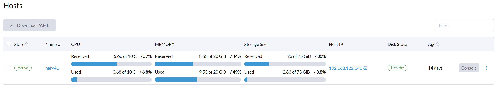
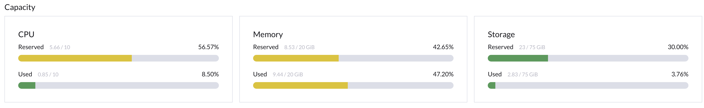

Calculation of Resource Metrics
SUSE Virtualization calculates resource metrics using data that is dynamically collected from the system. Host-level resource metrics are calculated and then aggregated to obtain the cluster-level metrics.
You can view resource-related metrics on the SUSE Virtualization UI.
-
Hosts screen: Displays host-level metrics

-
Dashboard screen: Displays cluster-level metrics

CPU and Memory
The following sections describe the data sources and calculation methods for CPU and memory resources.
-
Resource capacity: Baseline data
-
Resource usage: Data source for the Used field on the Hosts screen
-
Resource reservation: Data source for the Reserved field on the Hosts screen
Resource Capacity
In Kubernetes, a Node object is created for each host. .status.allocatable.cpu and .status.allocatable.memory represent the available CPU and memory resources of a host.
Example:
# kubectl get nodes -A -oyaml
apiVersion: v1
items:
- apiVersion: v1
kind: Node
metadata:
..
management.cattle.io/pod-limits: '{"cpu":"12715m","devices.kubevirt.io/kvm":"1","devices.kubevirt.io/tun":"1","devices.kubevirt.io/vhost-net":"1","memory":"17104951040"}'
management.cattle.io/pod-requests: '{"cpu":"5657m","devices.kubevirt.io/kvm":"1","devices.kubevirt.io/tun":"1","devices.kubevirt.io/vhost-net":"1","ephemeral-storage":"50M","memory":"9155862208","pods":"78"}'
node.alpha.kubernetes.io/ttl: "0"
..
name: harv41
resourceVersion: "2170215"
uid: b6f5850a-2fbc-4aef-8fbe-121dfb671b67
spec:
podCIDR: 10.52.0.0/24
podCIDRs:
- 10.52.0.0/24
providerID: rke2://harv41
status:
addresses:
- address: 192.168.122.141
type: InternalIP
- address: harv41
type: Hostname
allocatable:
cpu: "10"
devices.kubevirt.io/kvm: 1k
devices.kubevirt.io/tun: 1k
devices.kubevirt.io/vhost-net: 1k
ephemeral-storage: "149527126718"
hugepages-1Gi: "0"
hugepages-2Mi: "0"
memory: 20464216Ki
pods: "200"
capacity:
cpu: "10"
devices.kubevirt.io/kvm: 1k
devices.kubevirt.io/tun: 1k
devices.kubevirt.io/vhost-net: 1k
ephemeral-storage: 153707984Ki
hugepages-1Gi: "0"
hugepages-2Mi: "0"
memory: 20464216Ki
pods: "200"Resource Usage
CPU and memory usage data is continuously collected and stored in the NodeMetrics object. SUSE Virtualization reads the data from usage.cpu and usage.memory.
Example:
# kubectl get NodeMetrics -A -oyaml
apiVersion: v1
items:
- apiVersion: metrics.k8s.io/v1beta1
kind: NodeMetrics
metadata:
...
name: harv41
timestamp: "2024-01-23T12:04:44Z"
usage:
cpu: 891736742n
memory: 9845008Ki
window: 10.149sResource Reservation
SUSE Virtualization dynamically calculates the resource limits and requests of all pods running on a host, and updates the information to the annotations of the NodeMetrics object.
Example:
management.cattle.io/pod-limits: '{"cpu":"12715m",...,"memory":"17104951040"}'
management.cattle.io/pod-requests: '{"cpu":"5657m",...,"memory":"9155862208"}'
For more information, see Requests and Limits in the Kubernetes documentation.
Storage
SUSE Storage, which is the default Container Storage Interface (CSI) driver of SUSE Virtualization, provides storage management features such as distributed block storage and tiering.
Reserved Storage in SUSE Storage
SUSE Storage allows you to specify the percentage of disk space that is not allocated to the default disk on each new SUSE Storage node. The default value is 30. For more information, see Storage Reserved Percentage For Default Disk in the SUSE Storage documentation.
Depending on the disk size, you can modify the default value using the embedded SUSE Storage UI.
Data Sources and Calculation
SUSE Virtualization uses the following data to calculate metrics for storage resources.
-
Sum of the
storageMaximumvalues of all disks (status.diskStatus.disk-name): Total storage capacity -
Sum of the
storageAvailablevalues of all disks (status.diskStatus.disk-name): Data source for the Used field on the Hosts screen -
Sum of the
storageReservedvalues of all disks (spec.disks): Data source for the Reserved field on the Hosts screen
Example:
# kubectl get nodes.longhorn.io -n longhorn-system -oyaml
apiVersion: v1
items:
- apiVersion: longhorn.io/v1beta2
kind: Node
metadata:
..
name: harv41
namespace: longhorn-system
..
spec:
allowScheduling: true
disks:
default-disk-ef11a18c36b01132:
allowScheduling: true
diskType: filesystem
evictionRequested: false
path: /var/lib/harvester/defaultdisk
storageReserved: 24220101427
tags: []
..
status:
..
diskStatus:
default-disk-ef11a18c36b01132:
..
diskType: filesystem
diskUUID: d2788933-8817-44c6-b688-dee414cc1f73
scheduledReplica:
pvc-95561210-c39c-4c2e-ac9a-4a9bd72b3100-r-20affeca: 2147483648
pvc-9e83b2dc-6a4b-4499-ba70-70dc25b2d9aa-r-4ad05c86: 32212254720
pvc-bc25be1e-ca4e-4818-a16d-48353a0f2f96-r-c7b88c60: 3221225472
pvc-d9d3e54d-8d67-4740-861e-6373f670f1e4-r-f4c7c338: 2147483648
pvc-e954b5fe-bbd7-4d44-9866-6ff6684d5708-r-ba6b87b6: 5368709120
storageAvailable: 77699481600
storageMaximum: 80733671424
storageScheduled: 45097156608
region: ""
snapshotCheckStatus: {}
zone: ""